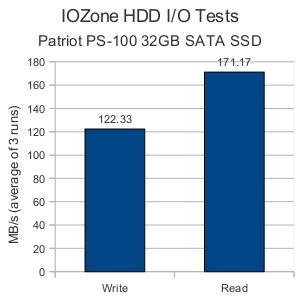

Patriot PS-100 32GB SATA SSD
[Category: Hardware and Electronics] [link] [Date: 2010-02-21 16:58:16]
While perusing the local Micro Center advertisements yesterday I came across a Patriot 32GB SATA SSD that was listed for $104.99 with a $20 rebate. This interested me and I identified it as a possible investment to temporarily make my Dell Vostro 1000 a bit more bearable. There was also the possibility of using it in a new netbook to replace the platter-based solutions that many are coming with.
Micro Center was beyond busy, but after soldiering on an employee eventually provided assistance and removed the product from the glass case it was stored in. After asking about the rebate, his friend quickly stated that he believed there was a $40 rebate on this drive. A 32GB SSD for $64.99 would be an amazing deal (assuming it isn't a completely useless product). The advertisements clearly stated a $20 rebate. After some muddling, the employee found it was now a $30 rebate. With the old man there (who was quite curious at this stage) willing to foot the bill we made the decision that it would be used in something (an old laptop, a new one, a new netbook) and that the deal was a bit too juicy to pass up. We then proceeded to wait in line for 20 minutes to have the pleasure of handing them their money. We got a good deal on some dual layer DVD's too.
The drive itself is very light and has a strong casing that appears to be made out of a lightweight aluminum-based material (much like my Lian Li case). There were no issues with using it, and Ubuntu 9.10 installed onto it with no quarrels. I read some discussions by other owners claiming that their performance was abysmal and that Patriot was accepting drives and replacing them with new ones. I decided to do a few tests using the IOZone test found in the Phoronix Test Suite. My test results on Phoronix Global can be found here.

The claimed peak speeds of this disk by Patriot are 150MB/s write and 200MB/s read. I scored an average of 122.33MB/s on the write test and 171.17MB/s on the read test. Those don't seem abysmal to me. The read speed is faster than SATA150 is even capable of (I imagine that many laptops purchased between a year or two ago still use SATA1 controllers). I'm very satisfied with those numbers. When keeping in mind that numbers provided by Patriot are peak speeds and not sustained speeds I don't believe that there is a performance issue with the drive I received. If it weren't for all of my important files being on my other laptop disk drive I would try to move over to the SSD today!